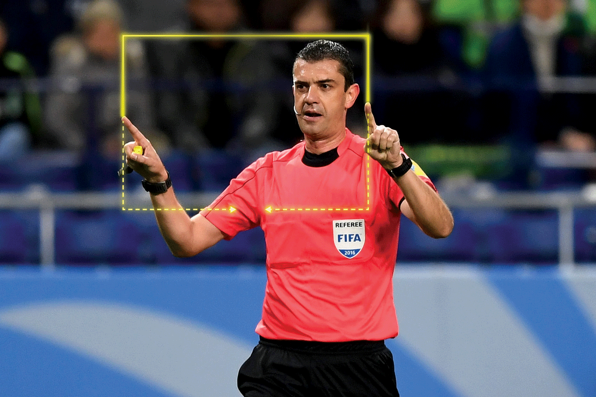

O futebol é um esporte cujo campo de grama apresenta 105 metros de comprimento por 68 metros de largura, uma padronização da Fifa. Duas equipes compostas por 11 jogadores disputam uma partida em que o objetivo é marcar o máximo possível de gols. Jogadas violentas podem ser punidas com cartões amarelo (serve como advertência) e vermelho (expulsão do jogador), e somente o goleiro pode usar as mãos durante a partida. Faltas cometidas dentro da área são punidas com a marcação de pênalti (cobrança feita de uma marca que fica a 11 metros do gol).
As partidas duram 90 minutos (divididos em dois tempos de 45 minutos), e as pausas são repostas com acréscimos determinados pelo árbitro. Em disputas eliminatórias, comumente conhecidas como mata-mata, se o jogo estiver empatado é realizada a prorrogação, composta por 30 minutos (divididos em dois tempos de 15 minutos). Caso a disputa permaneça empatada, haverá cobrança de pênaltis para definição do vencedor.
A sigla VAR significa Video Assistant Referee, ou Árbitro Assistente de Vídeo, na tradução para português. Sua função é analisar imagens de vídeo para ajudar o árbitro principal de uma partida de futebol a tomar a melhor decisão em lances duvidosos, como pênaltis ou impedimentos.
Para que o árbitro de vídeo possa auxiliar o árbitro central, é utilizado um sistema eletrônico que permite que eles se comuniquem durante a partida e discutam qual a interpretação correta para os lances que ocorrem durante o jogo de futebol.
O VAR pode entrar em ação para alertar a autoridade em campo com a finalidade de deixar as decisões mais corretas. No caso de um jogador ser repreendido ou expulso ou se não houver certeza sobre o infrator, os operadores VAR podem notificar o árbitro da decisão correta.
Essa é outra das coisas que podem ser revistas pelo VAR. Em algumas ocasiões, as expulsões se dão de maneira injusta ou pode passar batido para o árbitro. O VAR pode entrar em ação para alertar a autoridade em campo com a finalidade de deixar as decisões mais corretas.